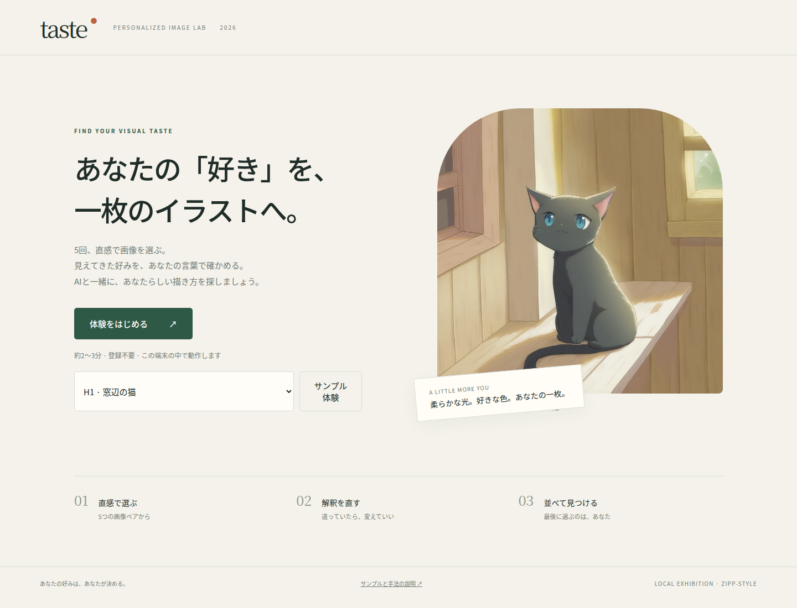
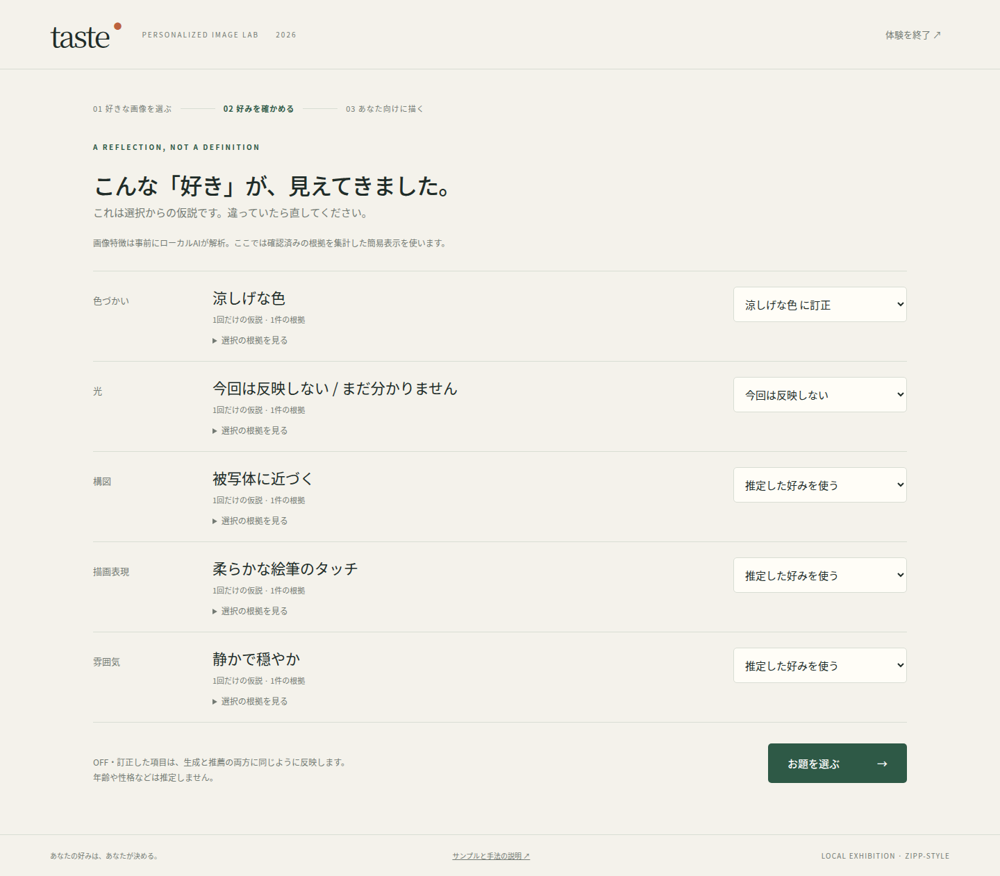
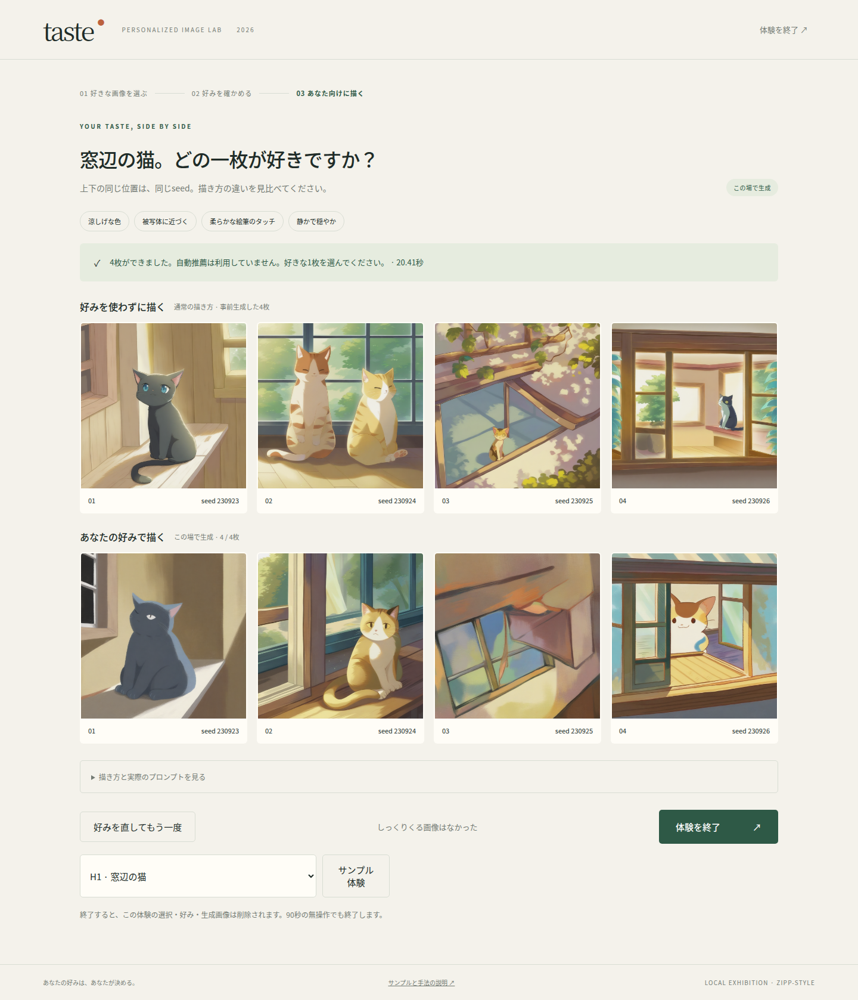

Taste / 2026-09-20
Illustrious XLで、二次元イラストの好みを描く。
生成器をIllustrious XLへ切り替え、選択画像10枚・通常画像24枚・事前サンプル24枚を再生成しました。6お題は背景・動物イラストとして描き、描画表現の選択肢を「柔らかな絵筆のタッチ／くっきりしたアニメ塗り」に変更しています。新画像をVLMで両方向から解析し、目視確認に合わせて根拠を更新しました。
現在の採用モードはZIPP-styleの実生成＋本人の手動選択です。PIGRewardの自動推薦は無効です。
| 確認項目 | 結果 |
|---|
| Python / JavaScript | 40件 / 4件成功（既存の非推奨警告2件） |
| 起動前検査 | 画像・hash・モデルrevision・通常／サンプルの生成条件すべて整合 |
| 6お題×3代表履歴 | 18/18で固定プロンプトと両tokenizer上限を確認 |
| 実ブラウザーでの4枚生成 | 20.87秒（書き換え・モデル読込を含む1回の計測） |
| 体験の通し確認 | 5回答、好み訂正、OFF、同一seed、手動選択、再読込、モバイル幅、キャッシュ、全OFF、リセット、サンプル表示 |
| ブラウザー例外 / 外部通信 | 0件 / 0件 |

開始画面

新画像の根拠とイラスト向けの描画表現

通常側と個人化側は同一モデル・設定・seedで比較
生成設定
{
"model": "OnomaAIResearch/Illustrious-xl-early-release-v0",
"revision": "dca0dac303e6dc4b0c31d8001bc685b89b5d0204",
"scheduler": "EulerAncestralDiscreteScheduler",
"width": 1024,
"height": 1024,
"steps": 20,
"guidance_scale": 7.0,
"negative_prompt": "worst quality, bad quality, lowres, blurry, photo, photorealistic, 3d, text, watermark, monochrome, greyscale, sketch, unfinished, 1girl, 1boy, person",
"precision": "fp16"
}
二次元イラストへの切替と動作は確認しましたが、画像には猫や家の複数化、分割構図、被写体が弱い／欠ける例も残ります。プロンプトの文字列保持は画像内容の完全な保証ではありません。今回の1回の速度をp95や長時間安定性の実測値とは扱いません。旧SDXLの20セッション測定は別の記録です。
検証記録JSON · 実ブラウザーの記録 · 旧SDXL構成の記録 · Illustrious XL公式モデルカード